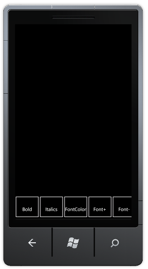
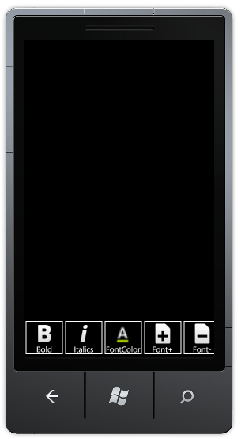

This feature enables you to add caption, icon or both to the Toolbar item. You can set different mode for each item of a Toolbar.
Adding Toolbar Mode to an Application
You can set the Toolbar mode using the ToolBarItemMode property.
The following code illustrates how to add caption alone for an item:
|
[XAML] <syncfusion:ToolBar> <syncfusion:ToolBar.ToolBarItems> <syncfusion:ToolBarItem ImageSource="/Background.png" Caption="Item1" ToolBarMode="Text"/> </syncfusion:ToolBar.ToolBarItems> </syncfusion:ToolBar> |
|
[C#] ToolBarItem Item = new ToolBarItem(); Item.ImageSource = new BitmapImage(new Uri("/Image.png", UriKind.Relative)); Item.ToolBarMode = Mode.Text; this.Toolbar.ToolBarItems.Add(Item); |

Figure 64: Toolbar Mode - Text
The following code illustrates how to add icon alone for an item:
|
[XAML]
<syncfusion:ToolBar> <syncfusion:ToolBar.ToolBarItems> <syncfusion:ToolBarItem ImageSource="/Background.png" Caption="Item1" ToolBarMode="Image"/> </syncfusion:ToolBar.ToolBarItems> </syncfusion:ToolBar>
|
|
[C#]
ToolBarItem Item = new ToolBarItem(); Item.ImageSource = new BitmapImage(new Uri("/Image.png", UriKind.Relative)); Item.ToolBarMode = Mode.Image; this.Toolbar.ToolBarItems.Add(Item);
|
Figure 65: Toolbar Mode - Image
The following code illustrates how to add caption and icon for an item:
|
[XAML]
<syncfusion:ToolBar> <syncfusion:ToolBar.ToolBarItems> <syncfusion:ToolBarItem ImageSource="/Background.png" Caption="Item1" ToolBarMode="Both"/> </syncfusion:ToolBar.ToolBarItems> </syncfusion:ToolBar>
|
|
[C#]
ToolBarItem Item = new ToolBarItem(); Item.ImageSource = new BitmapImage(new Uri("/Image.png", UriKind.Relative)); Item.ToolBarMode = Mode.Both; this.Toolbar.ToolBarItems.Add(Item); |

Figure 66: Toolbar Mode - Both